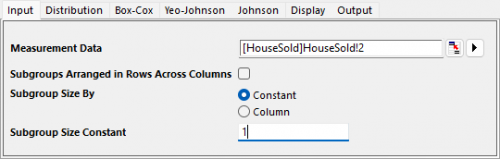
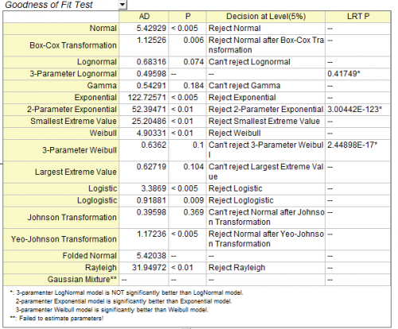

Tutorial for Identify Data Distribution
Tutorial-IDD
Notes for Starting
- Download the sample project file from here and open it in Origin.
 |
Topics for Further Reading:
|
User Story
A house builder has house sold data in the surrounding area. He want to find out a best fit distribution of the data for follow-up analysis.
Identify Data Distribution
- Open the sample project file in Origin, go to Folder 3. Nonnormal using the Project Explorer. Activate the workbook House Sold
- Highlight column B in worksheet. Click the Statistical Process Control icon
 in the Apps Gallery window.
in the Apps Gallery window.
- Choose Identify Data Distribution tab, click Identify Data Distribution icon to open the dialog
- In the Input tab of the opened dialog, column B will be selected automatically as Measurement Data. Choose Subgroup Size By to be Constant and set the Subgroup Size Constant to be 1

- In the Input tab, keep Number of Distributions and Transformations to be All.

- Click OK button. The report sheet will be created
Interpreting the Results
We can compare and select a fitting model based on the following results
Following distributions are good fit for the data. Their P value are larger than 0.05 in the Goodness of Fit Test table. And the points on the probability plot follow a straight line within the confidence bounds.
-
- Johnson Transformation (0.369)
- Gamma (0.184)
- Largest Extreme Value (0.104)
- 3-Parameter Weibull (0.1)
- Lognormal (0.074)
Probability (P-P) Plot
The closer all the scatter points are to the reference line, the better the distribution is for the dataset.

Goodness of Fit Test table
